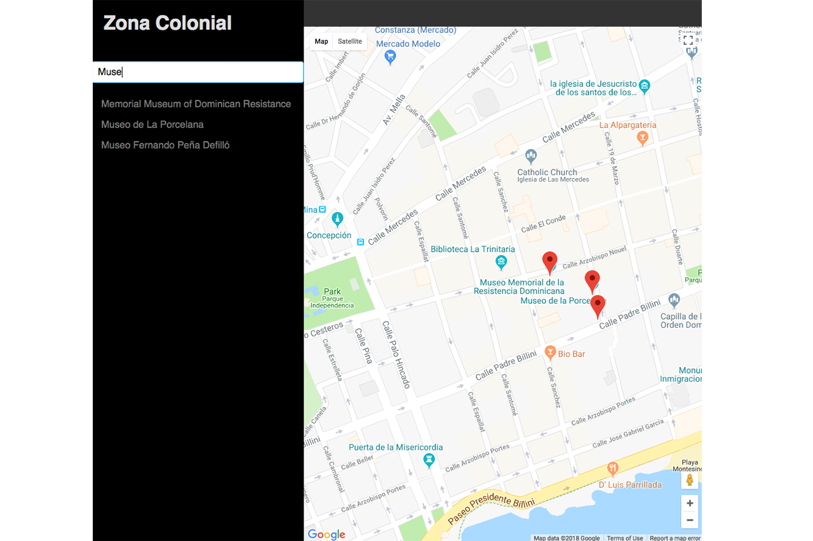
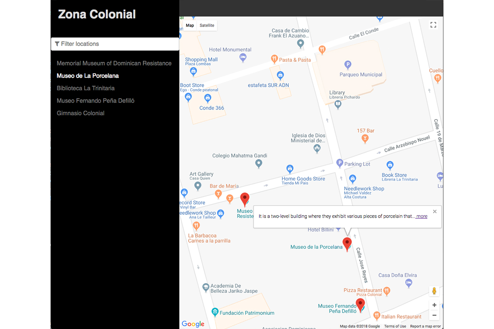
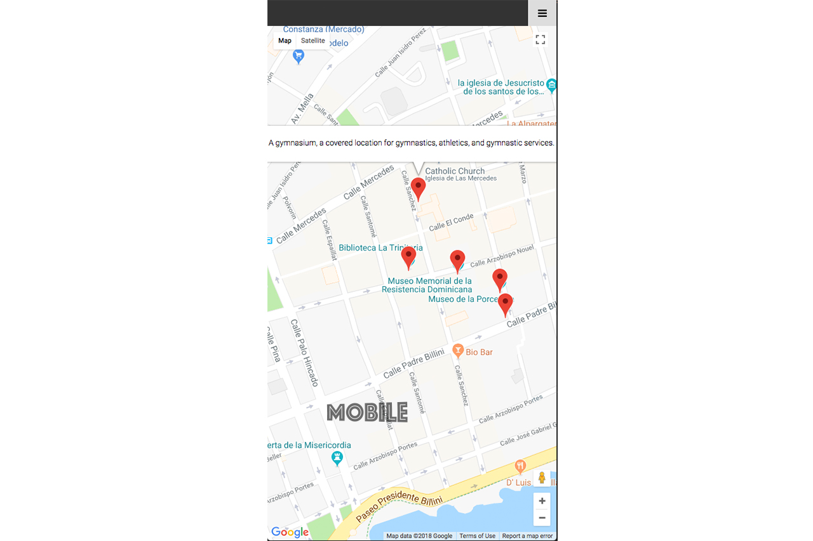
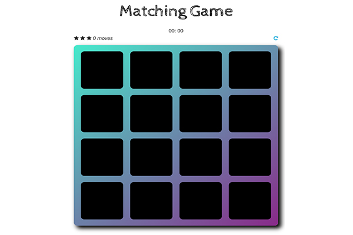

<div id="ajax-page" class="ajax-page-content">
	<div class="ajax-page-wrapper">
		<div class="ajax-page-nav">
			<div class="nav-item ajax-page-prev-next">
				<a class="ajax-page-load" href="portfolio-2.html"
					><i class="lnr lnr-chevron-left"></i
				></a>
				<a class="ajax-page-load" href="portfolio-1.html"
					><i class="lnr lnr-chevron-right"></i
				></a>
			</div>
			<div class="nav-item ajax-page-close-button">
				<a id="ajax-page-close-button" href="#"
					><i class="lnr lnr-cross"></i
				></a>
			</div>
		</div>

		<div class="ajax-page-title">
			<h1>Neighborhood Map</h1>
		</div>

		<div class="row">
			<div class="col-sm-7 col-md-7 portfolio-block">
				<div class="owl-carousel portfolio-page-carousel">
					<div class="item">
						
					</div>
					<div class="item">
						
					</div>
					<div class="item">
						
					</div>
				</div>
				<!--
                <div class="portfolio-page-image">
                    
                </div>
                -->

				<script type="text/javascript">
					jQuery(document).ready(function($) {
						$(".portfolio-page-carousel").owlCarousel({
							smartSpeed: 1200,
							items: 1,
							loop: true,
							dots: true,
							nav: true,
							navText: false,
							margin: 10
						});
					});
				</script>
			</div>

			<div class="col-sm-5 col-md-5 portfolio-block">
				<!-- Project Description -->
				<div class="project-description">
					<div class="block-title">
						<h3>Description</h3>
					</div>
					<ul class="project-general-info">
						<li>
							<p><i class="fa fa-user"></i> Fernando Espinosa</p>
						</li>
						<li>
							<p>
								<i class="fa fa-globe"></i>
								<a
									href="https://fjevictoriano.github.io/Neighborhood-Map/"
									target="_blank"
									>https://fjevictoriano.github.io/Neighborhood-Map</a
								>
							</p>
						</li>
						<li>
							<p>
								<i class="fab fa-github"></i>
								<a
									href="https://github.com/fjevictoriano/Neighborhood-Map"
									target="_blank"
									>https://github.com/fjevictoriano</a
								>
							</p>
						</li>
						<li>
							<p><i class="fa fa-calendar"></i> 30 July, 2018</p>
						</li>
					</ul>

					<p class="text-justify">
						Neighborhood Map is a single page application build with react
						featuring a map of a neighborhood. You can highlight locations
						in the map by selecting one of the locations from a predefined
						list. Clicking a location on the list displays unique
						information about the location, and animates its associated
						map marker. You can use the filter as well to filter the
						locations.
					</p>
					<!-- /Project Description -->

					<!-- Technology -->
					<div class="tags-block">
						<div class="block-title">
							<h3>Technology</h3>
						</div>
						<ul class="tags">
							<li><a>React</a></li>
							<li><a>CSS / HTML</a></li>
							<li><a>Google Map API</a></li>
							<li><a>Foursquare API</a></li>
						</ul>
					</div>
					<!-- /Technology -->

					<!-- Share Buttons -->
					<div class="btn-group share-buttons">
						<div class="block-title">
							<h3>Share</h3>
						</div>
						<a href="#" target="_blank" class="btn"
							><i class="fab fa-facebook"></i>
						</a>
						<a href="#" target="_blank" class="btn"
							><i class="fab fa-twitter"></i>
						</a>
						<a href="#" target="_blank" class="btn"
							><i class="fab fa-dribbble"></i>
						</a>
					</div>
					<!-- /Share Buttons -->
				</div>
				<!-- Project Description -->
			</div>
		</div>
	</div>
</div>
